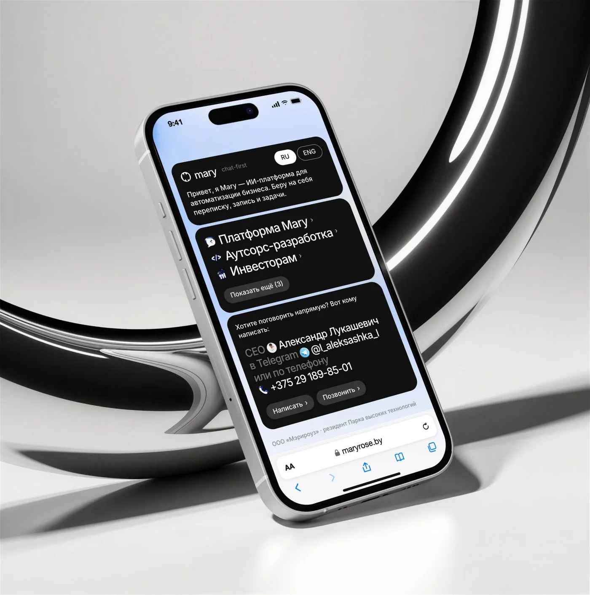
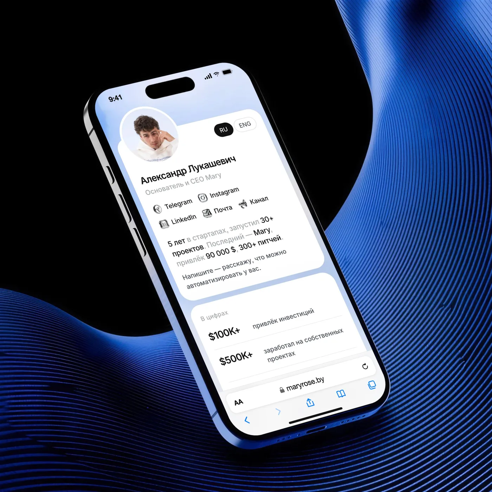

Сайтmaryrose.by
Сайтmaryrose.by Сайтsales.maryrose.by
Сайтsales.maryrose.by


05Визитки команды и контент
Всё, что человек видит в соцсетях
Сделала страницу со всеми ссылками Mary (одна ссылка для шапок профилей) и личную страницу CEO, которую он отправляет после встречи вместо визитки. Обе собраны под телефон, потому что открывают их почти всегда с телефона.
Веду визуал соцсетей: посты для Telegram, Threads и Instagram, обложки, баннеры. Посты пишем живо и по-человечески, без канцелярита.
Открыть maryrose.by/links ↗︎
